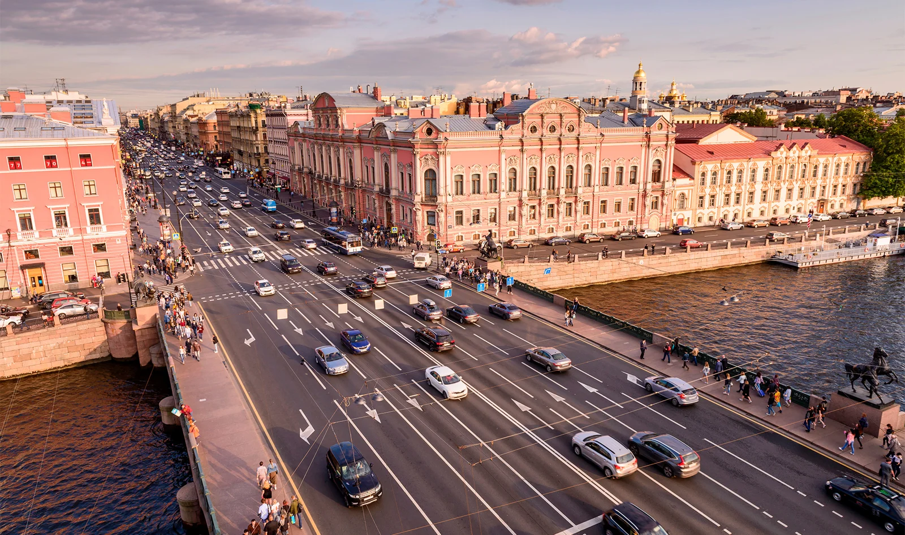
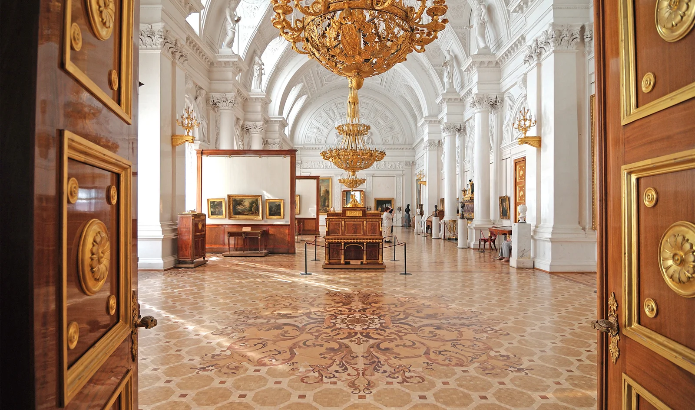
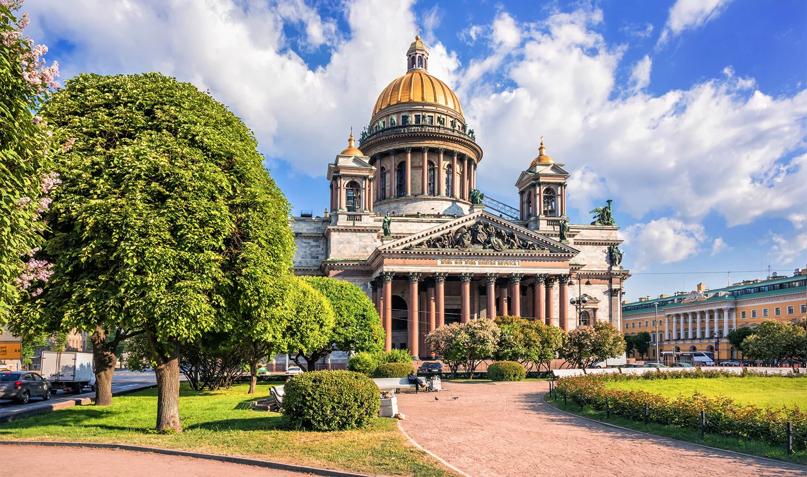
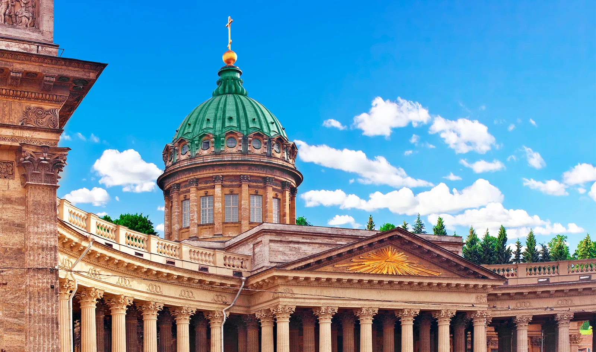
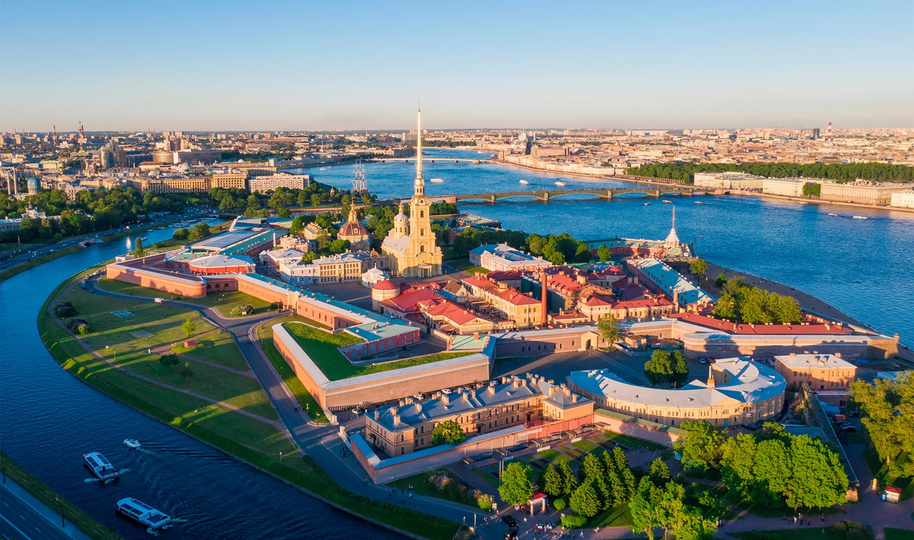

Достопримечательности Петербурга: открываем с нового ракурса
Автор: Диана Акчурина
Известные достопримечательности рассматриваются через дополнительные детали и менее очевидные ракурсы. Подборка для тех, кто хочет вернуться к знакомым местам с новым маршрутом.
Читать полную статью на блоге Островка →



Фото: Vladimir Kovalchuk / Shutterstock.comИсточник изображения


Фото: tovovan / Shutterstock.comИсточник изображения


Фото: Baturina Yuliya / Shutterstock.comИсточник изображения


Фото: Ultraskrip / Shutterstock.comИсточник изображения


Фото: Stanislav Samoylik / Shutterstock.comИсточник изображения